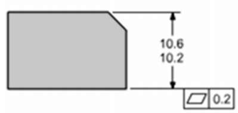
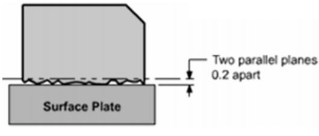
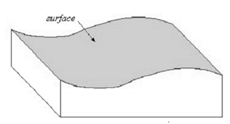
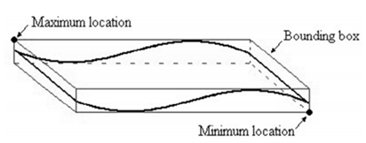
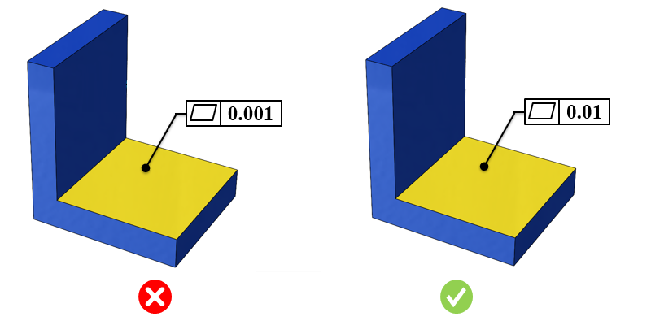

3D CAD上で利用可能な指定幾何公差（GD&T）情報およびPMI情報を特定し、指定値に対してより厳しい公差を検証します。
平面度公差は、がたつきなく面同士が密着し、かつ大きな姿勢制約を必要としない治具設計において一般的に使用されます。これは、参照される面全体が収まるべき領域を定義する2つの平行な平面を指します。平面度公差は、常にそれに関連付けられた寸法公差よりも小さくなります。
厳しい公差は、製品設計、製造、検査時間に影響を与えます。公差が厳しいことにより、以下の項目が追加され、最終製品コストが増加します。
高度または特殊な検査装置が必要になる
工具交換の頻度が増加する
最終部品受入れにおける歩留まりが低下する
スクラップ率が高くなる
原材料使用量が増加する
過度に厳しい公差は、高コストおよび生産性の低下につながります。適切な公差を持つ部品は、優れた嵌合性と機能性を備え、製造効率も向上します。組立工程においては、厳しい公差を持つ部品は組み立てが困難となり、組立コストの増加につながります。
適切な公差を設定する際には、以下の点を考慮する必要があります。
部品の機能に基づき、重要公差と非重要公差を区別する
不必要に厳しい公差を避ける
品質コストを最小限に抑える
公差値を定義する前に活用できる有用なヒントを以下に示します。
その部品はどのような機能を果たしているか？
他の部品と相互作用する部品かどうかを確認する。相互作用しない場合は、厳しい公差を避ける
重要寸法を特定し、必要に応じて公差を設定する
部品品質を向上させるために、なぜ厳しい公差が必要なのかについて、製造元と十分な情報に基づいた判断を行う
平面度公差の値は、フィーチャのサイズ公差値よりも小さく設定する必要があり、平面度はサイズ限界内に収まらなければなりません。一般的な指針として、過度に厳しい公差はコスト増加および生産性低下につながります。公差値は、社内の加工能力、利用可能な機械構成、部品全体のサイズ、およびフィーチャの複雑さに基づいて設定されます。
DFMProでは、公差タイプ、部品サイズ範囲、およびそれに対応する公差値を構成することができます。
部品外形サイズ = 部品のおおよその最大対角長さ
ここで、
Lt = 長さ
Wt = 幅
Ht = 高さ
Ldt = 部品の対角長さ





注記：
CADモデルで指定された公差は、eDrawingsレポートでは表示されません。
ルール構成で設定された公差値は、公差ゾーンとして扱われます。
このルールは、面やエッジなど、CADフィーチャに関連付け（参照）されている幾何公差のみを考慮します。
このルールは、幾何公差を持つ部品モデルに対して実行されます。